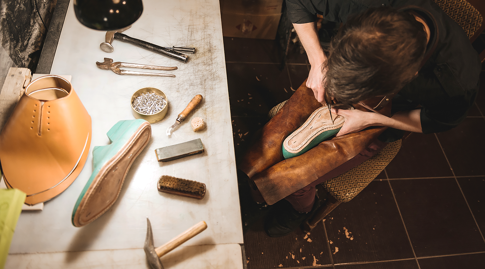

<section class="video">
  <div class="video__container">
    <div class="video__content">
      <h2 class="video__title">Our Video</h2>
      <div
        class="pricing__w-picture__image ui-image_5M9"
        data="data-smart"
        style="
          background-image: url('//res2.weblium.site/res/5ed8f9de31f15d002173e2ce/5edf970c367f6d0023bd5808');
          background-color: transparent;
          background-position: 1.876% 43.132%;
          background-size: auto 54.5%;
          background-repeat: no-repeat;
        "
      ></div>
      <p class="video__description">
        <em
          >Shoe repair requires high skills and accuracy. See how we work in our
          small workshop based in New York.</em
        >
      </p>
    </div>
    <div class="video__image-wrapper">
      
      <svg
      class="video__svg"
        xmlns="http://www.w3.org/2000/svg"
        xmlns:xlink="http://www.w3.org/1999/xlink"
        version="1.1"
        x="0px"
        y="0px"
        viewBox="0 0 100 100"
        enable-background="new 0 0 100 100"
        xml:space="preserve"
        height="100%"
      >
        <g style="" fill="currentColor">
          <circle
            fill="none"
            stroke="currentColor"
            stroke-width="6"
            stroke-miterlimit="10"
            cx="50"
            cy="49.998"
            r="47"
            style=""
          ></circle>
          <polygon
            points="36,28 72,49.96 36,71.921  "
            style=""
            fill="currentColor"
          ></polygon>
        </g>
      </svg>
    </div>
  </div>
</section>
